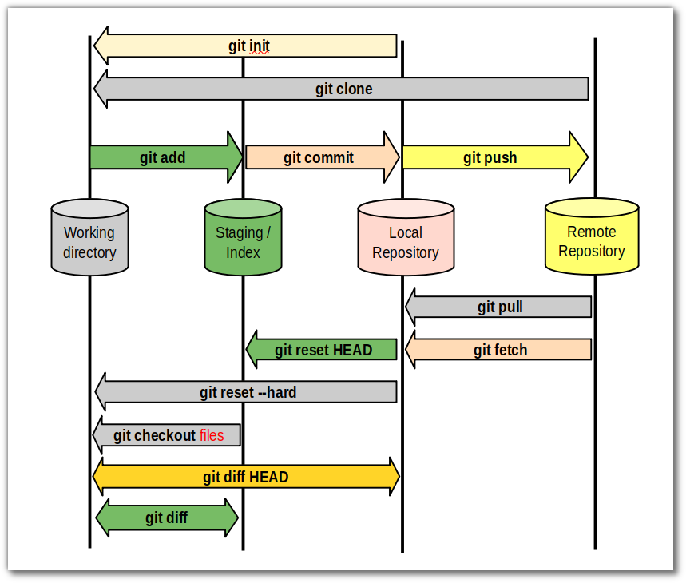

In this page I will be sharing about Git and Github, these platforms are used to publish my website for any members of public to see! These platforms are free and easy to use!
GitHub is a platfrom of internet hosting for softwear development and version control for using git. In GitHub is a platform that provides access control and several collaboration features. Above is a screen capture that shows my website being published! It shows the pages tab in the settings showing that my website has been published and it is ready to view!
Above is a image of my repository and the edits I make to my website. This application is called GitHub desktop and here is where I update my changes to my website. This is the process of Git where I can update my website locally online and then later update it remotely in the Git servers. This allows me to have a failsafe where I can edit and make changes before publishing my changes. Below is an image that shows the git process
Click here to return back to documentations!!